17 Sep 2024 - stephanie | Views: 0
Hack the North was this weekend!
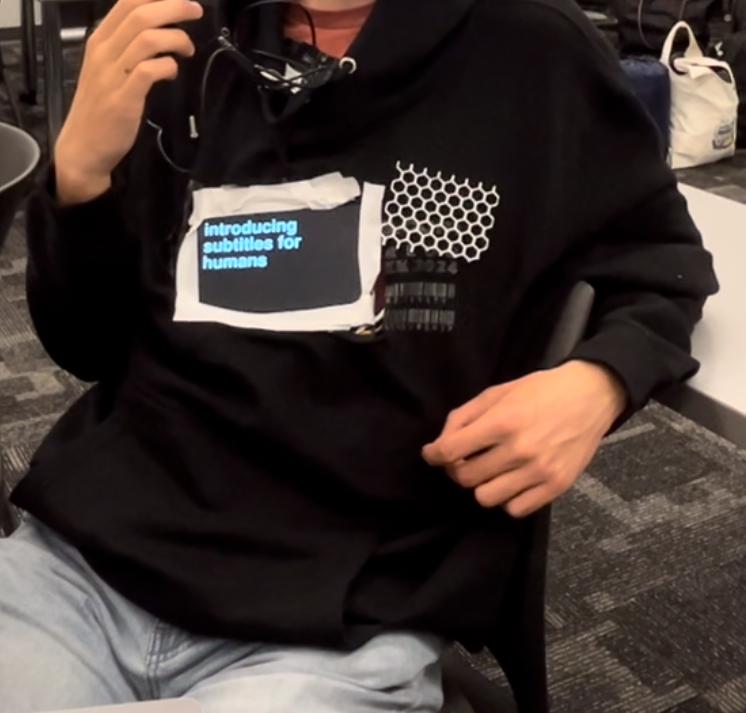
Three days before, I knew that I wouldn’t be able to eat home food for a while (since I’d be in Canada), so I decided to try cooking dinner for the first time. On Tuesday, I made soy sauce salmon with rice, seaweed, and cucumber. On Wednesday I made fried rice using the leftover rice. On Thursday I made pineapple pizza for breakfast. It was for breakfast because…
My flight was really early, 6 am on Friday, which meant two things: 1) I was missing a day of school, so I spent Wednesday finishing my schoolwork early.
2) I had to wake up super early! On Thursday, I packed my bags, then slept early at 8 (so I ate the pizza for breakfast instead of dinner) to wake up at 2:30 am the next morning (that’s when I sleep sometimes…). I went out at 3:00 am, and everything seemed so empty. The roads were nice and quiet. By 3:30, I arrived at Logan, then reached my gate at 4. I slept for a little, then it was my flight.
I arrived at 8 am and finished my HEXT homework. Using the code for http://karpathy.github.io/2015/05/21/rnn-effectiveness/, I also had some fun training a character RNN model on my Discord messages. It improved pretty quickly, and it was fun to watch. 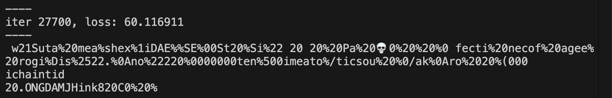
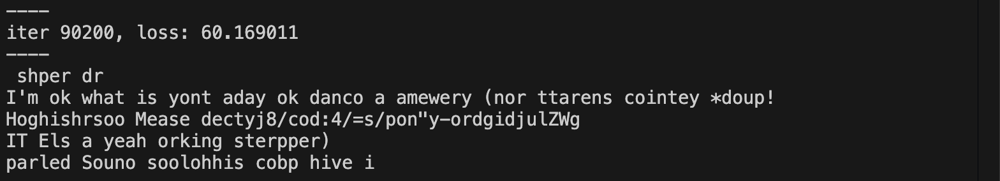
I also made a little game for fun which scraped posts from r/aita and given the text, had you guess what the final verdict was.
Soon the waiting area for Hack the North opened up, so I went over to meet some people. It was fun chatting to them and then it was time to leave through the bus. I sat next to one of the people I had met, a computer science major (tbh most people there were), and we talked about the internet, graphics processing, and a host of other things.
When we arrived it was time for dinner. Afterwards I went to the team formation activity, where I met two people who also wanted to try out a hardware project. I was excited because that was my goal this hackathon, so we formed a team and moved over to the Hardware Bay. We discussed project ideas. Our first idea was glasses that gave subtitles about the world around you, but it was a little unfeasible. We decided instead to do the reverse, where you had a wearable shirt with a screen that displayed subtitles of what you were saying to the world. We requested our hardware and went to bed.
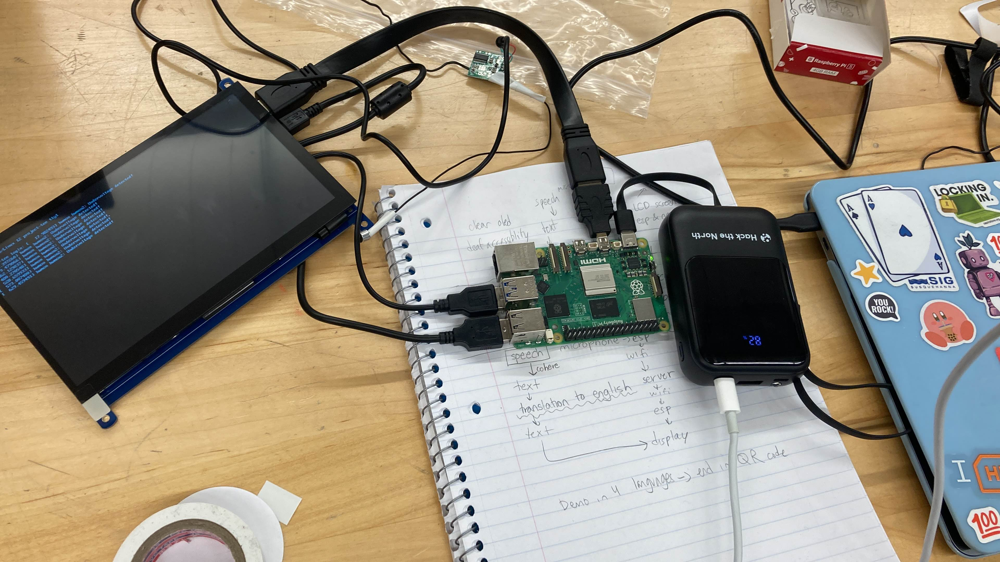
I got 5-6 hours of sleep, which isn’t too bad for an overnight hackathon! I was a little worried about sleep - I also only got around 4-6 the day before and I wasn’t expecting to sleep much the second night when I was in the thick of the hackathon.
The next day we picked up our hardware and were told that there were no microphones left. We were slightly concerned, because that was a big problem. Our project depended on the user being able to speak into a microphone that we could get the sound packets from. We decided to go for a trip to Canadian Computers & Electronics, 1.5 miles away. To get there faster, we took e-scooters. It was my first time on an e-scooter and it was a little frightening to be honest, but we were able to get to the store, buy the microphone, and return safely.
By lunchtime we had the hardware assembled and the pygame display working.
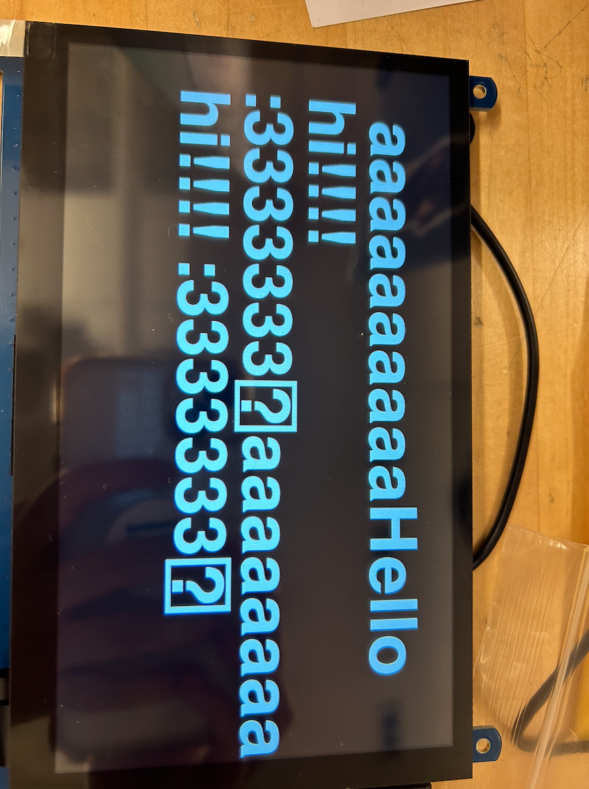
Assembling the hardware and reading the documentation was really helpful for learning how electronics/everything worked. My soldering abilities I was developing came in handy when we needed to de- and re-solder parts of the microphone to make it less bulky.
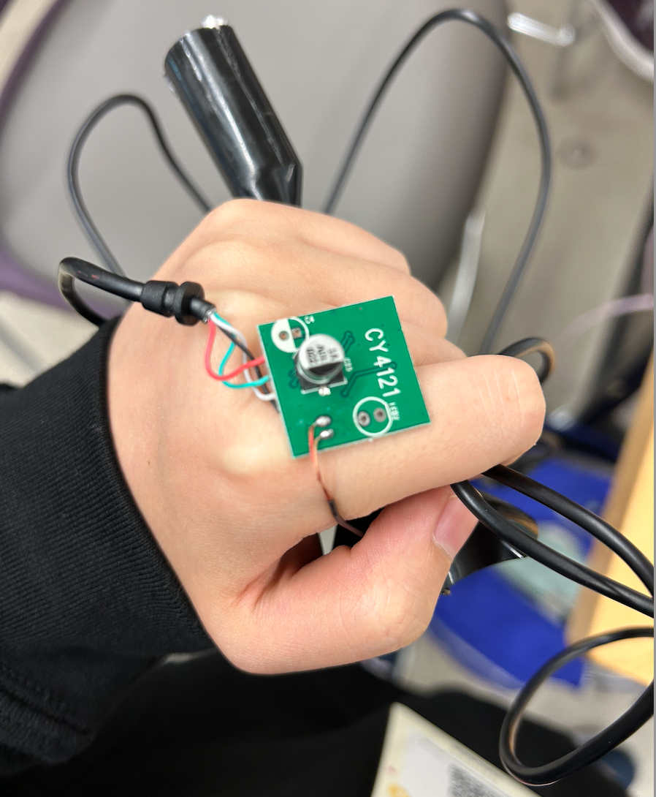
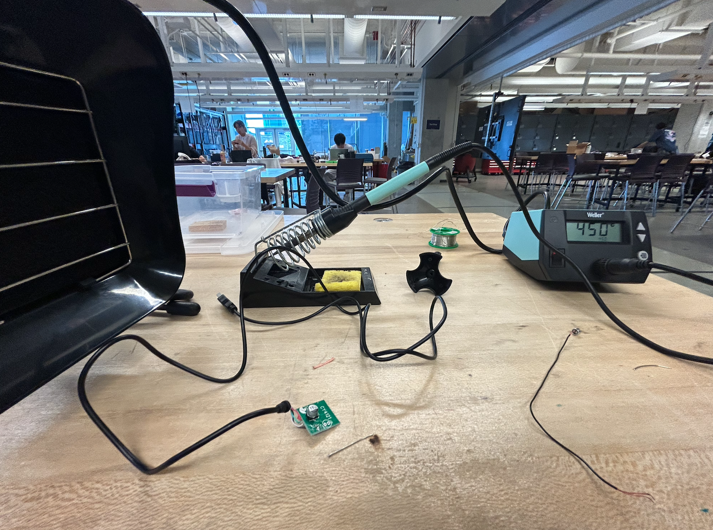
By dinner, we got the transcription working, so we went out to get boba to celebrate. I had a blueberry boba, which was delicious.
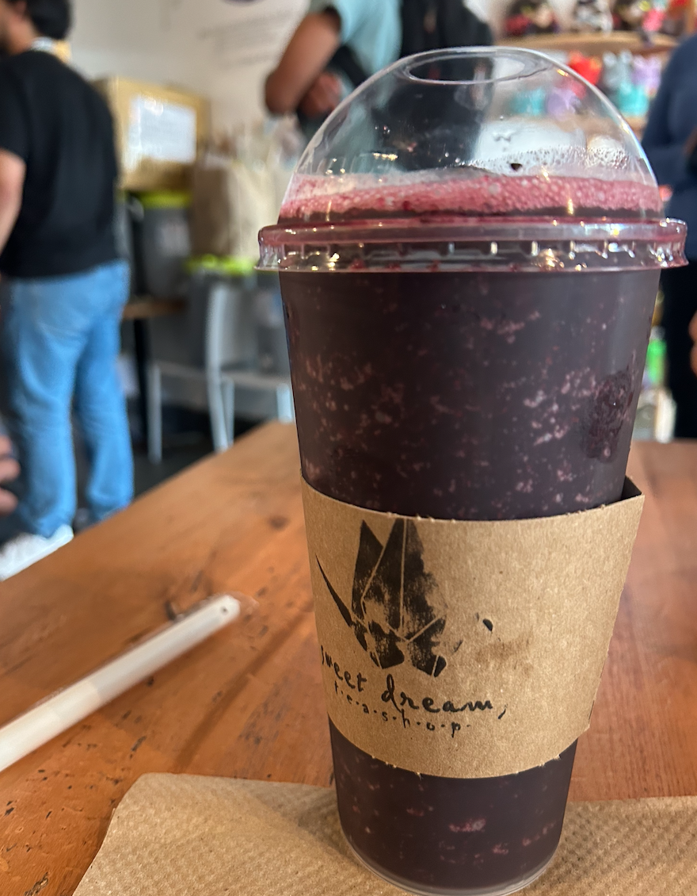
We 3D printed a case for the screen adn the raspberry pi 5 that powered it, which was really helpful because the rp5 went up to 98 C sometimes and this was supposed to be wearable.
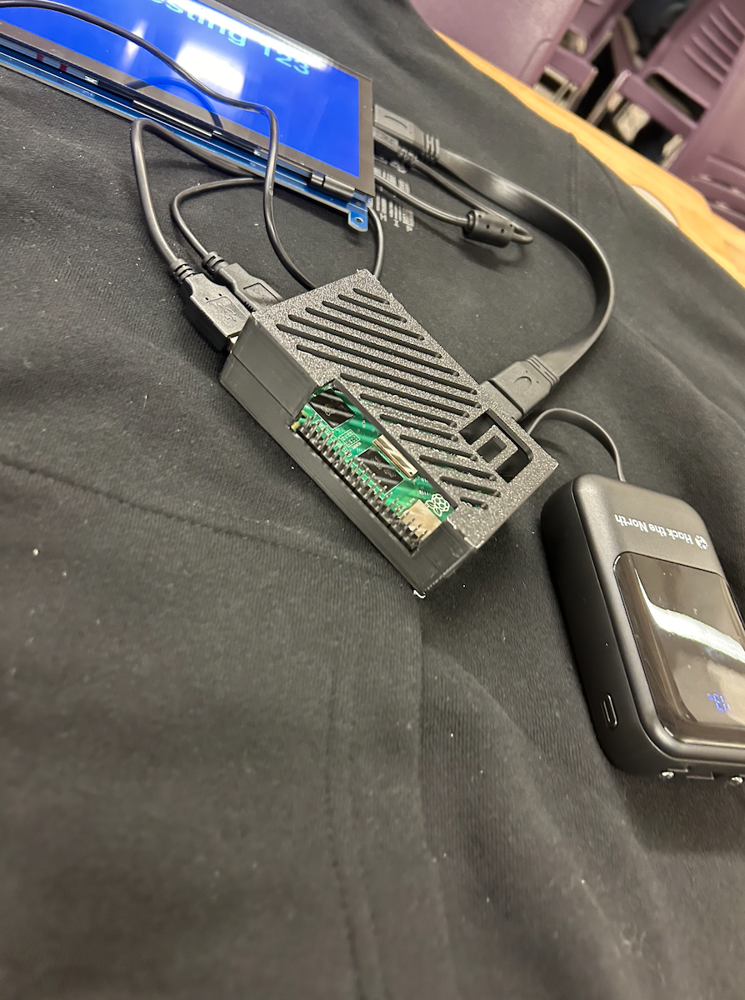
We found a large sweater and spray painted it completely black (my first time spray painting!).
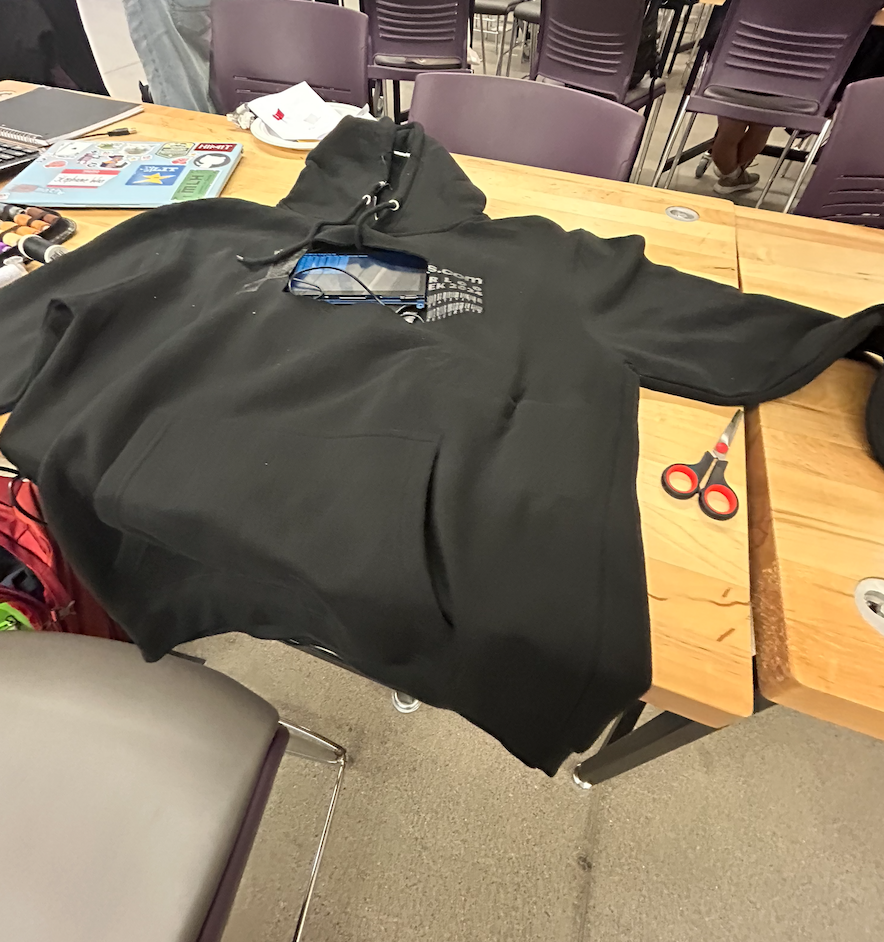
We then sewed it all together and made a devpost for submission. We submitted 2 minutes before the deadline, but we made it! We celebrated by taking 1-hour naps before we had to prepare for the presentation. We made a script and practiced our presentation, then it was time and we went, and then the hackathon was nearly over.
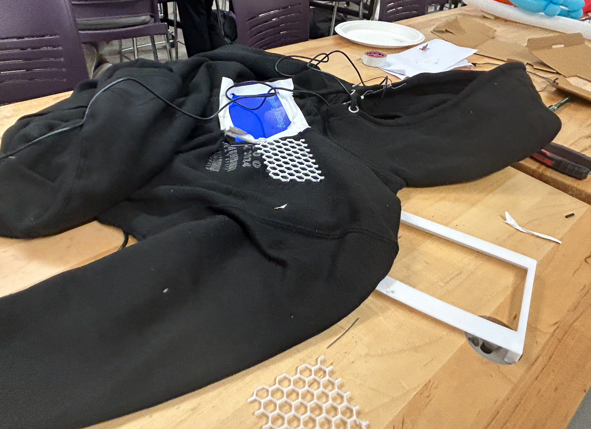
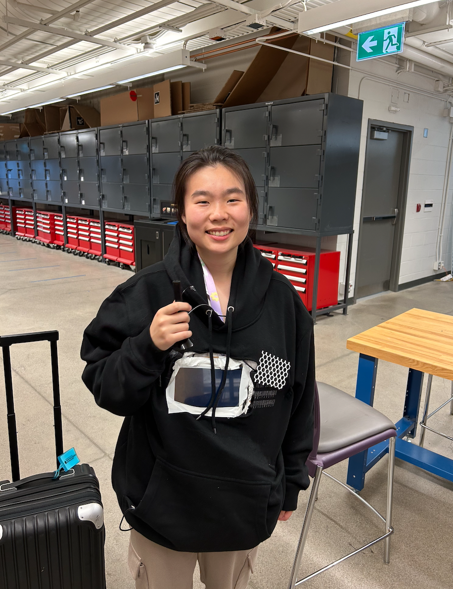
My earlier prediction was right: I only got 1 hour of sleep over the night. There were so many sponsors at the event that gave out swag (and there was so much swag also!) as well as delicious snacks like soup, chocolate, kinder eggs, and chips available. The event was super fun overall.
It was time to return, so we got back onto the bus, which was a school bus. Then it was time for my flight home. I was utterly exhausted returning on Monday, but happy.
You can find our github repo here: https://github.com/Project-Tee/Project-Tee/tree/main
Or a more detailed description of the project on devpost: https://devpost.com/software/project-tee